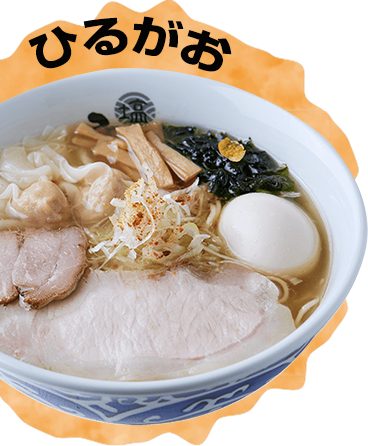

鶏と煮干しの黄金比が生む、珠玉の煮干しらーめん
濃厚魚介の名店「玉」に
よる煮干しらーめん専門店。鶏の旨味が詰まった濃厚スープに数種の煮干しを
合わせて作る至福の一杯は新たな東京名物です
※期間限定メニューは、2022年11月以降食材がなくなり次第終了と
させていただきます。

行列の絶えない東京を代表する塩ラーメンの名店
北海道産小麦の風味豊かな麺と、厳選食材からコクと旨味を引き出したスープは絶品。
※期間限定メニューは、2022年11月以降食材が
なくなり次第終了とさせていただきます。
本店がミシュランガイドに掲載された実力店
日本最大級の地鶏『天草大王』を使った醤油らーめんの他、
貝出汁塩ラーメン、キノコベジソバも人気。近年の食の多様化に対応した、
グルテンフリーやビーガンの
メニューもご用意。
※期間限定メニューは、2022年11月以降食材がなくなり次第終了と
させていただきます。